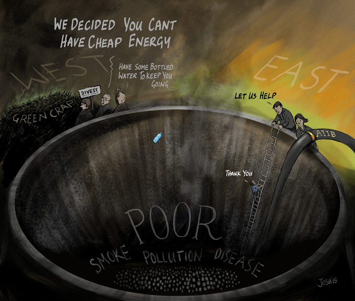

Klimatet och växthuseffekten hur hanterar vi den problematiken
Få ifrågasätter att växthuseffekten är en av nutidens viktigaste samhällsfrågor. Så varför använder medier, politiker och ledande forskare fortfarande överdrifter för att väcka uppmärksamhet?
Tänk er att 1 500 flygplan dagligen störtar. Tänk er paniken på vägen ner. Trycket som faller, pensionärer som blir vita i ansiktet och rasar ihop i akuta hjärtinfarkter. Stolsäten som slits loss från sina fästen, småbarn som flyger skrikande genom kabinen och kroppar som slits i stycken när flygplanen kraschar mot marken. Tänk er lidandet, förlusterna. Och tänk er att det sker 1 500 gånger om dagen.
Då skulle dom ta slut efter 10 dagar. Man gör ungerfär 78 miljoner starter 2015.

Skulle ni acceptera det?
Det är en djävulsk fråga han väcker, Johan Rockström, Sveriges mest inflytelserika person vad gäller klimatfrågor. Han ser sig omkring, lugnt men fokuserat, och läser av reaktionerna. Frågan i sig handlar inte ens om störtande flygplan, men hans jämförelse är så effektiv att både TV-tittarna och de fyra personer som delar studio med Rockström troligen låter fantasin skena iväg mot ett blodbad.
Det är den 24 november 2014 och SVT har premiär för sin satsning Runda bordet. Ett samtalsprogram som enligt programförklaringen »lyfter fram de stora frågorna, de som påverkar vårt samhälle, vår värld och våra liv«. Den här dagen avhandlas klimatet. Finns det hopp eller rusar vi mot vår undergång?
Johan Rockström går ut hårt. Han säger att vi med väldigt stor sannolikhet redan med dagens nivå av växthusgaser i atmosfären kommer att nå över två graders global uppvärmning. Och han berättar att vissa glaciärer på Antarktis nu obönhörligen slirar ner i havet och att vi med »väldigt stor sannolikhet« står inför en höjning av havsytan på två meter vid seklets slut.
Det är oroande siffror. Mycket högre än de som FN:s klimatpanel har gått ut med i sin senaste rapport. Ändå inflikar en av de inbjudna kring bordet, Gustaf Arrhenius, professor i filosofi och VD för Institutet för Framtidsstudier, att det kanske är ännu dystrare än vad Rockström säger. »Absolut«, svarar Rockström och drar nu till med historien om de kraschade flygplanen:
– Till och med vid de växthuskoncentrationer vi har i dag så är sannolikheten för hela sex grader, det vill säga något som vi alla måsta vara överens om är fullständigt oacceptabelt, hela 1,6 procent. Och den sannolikhetsnivån, som kan låta låg, är detsamma som om vi skulle acceptera att 1 500 flygplan kraschar varenda dag. Det är en sannolikhetsnivå vi aldrig skulle acceptera i andra sektorer i samhället.
Hans uttalande lämnar mig ingen ro. Kan man göra en sådan jämförelse? Efter programmet plockar jag fram en miniräknare. Om 1 500 flygplan skulle störta varje dag, så blir det över en halv miljon flygolyckor om året. Hela jordens flygplansflotta skulle raderas ut flera gånger om.
Det låter galet.
Och hur är det med det andra? Är sannolikheten stor att temperaturen ökar med två grader redan vid dagens nivå? Och kan havsytan stiga med hela två meter till 2100? Jag läser sammanfattningen av den senaste rapporten från FN:s klimatpanel och hittar inget tydligt stöd för påståendena. Kanske finns det någon annanstans? Jag googlar, men istället för en förklaring återkommer historien om de kraschade flygplanen; i DN, i Sveriges Radio och i Aftonbladet. Tillsammans med fler citat och fler rubriker som naturligtvis Rockström inte kan styra över: »Klimatexpert varnar för global krissituation.« »Klimatkatastrof är nära.« »Jorden halvvägs mot undergång.« Artikeln under den sistnämnda rubriken är bildsatt med en vulkan som spyr ut lava.
Få personer har i dag så stort medialt genomslag vad gäller miljöfrågor som Johan Rockström. Han utsågs till Årets svensk 2009 av tidningen Fokus och utnämndes till Sveriges miljömäktigaste både år 2012 och 2013 av tidningen Miljöaktuellt. I grunden utbildad agronom disputerade han vid Stockholms universitet 1997 som systemekolog med fokus på globala vattenresurser. Han är professor i globala vattensystem och global hållbar utveckling och har haft en rad prestigefyllda uppdrag. I dag är han chef för Stockholm Resilience Center, ett tvärvetenskapligt centrum för forskning om planetens förmåga att stå emot förändringar och om världens möjligheter att förvalta ekosystem.
Sedan drygt fem år tillbaka har Johan Rockström allt mer fått rollen som Sveriges mest citerade person vad gäller klimat- och miljöfrågor. Ingen annan har kunnat leverera så slagkraftiga citat. Aldrig tidigare har berättelsen om klimatförändringar låtit så dramatisk och välformulerad. Samtidigt tycks hans version av problemen överstiga de klimatrapporter som FN:s klimatpanel, IPCC, ger ut. Har han tillgång till annan information? Eller har Johan Rockström blivit Sveriges egen »Doktor Doom«?
Schweiziska alperna, juli 2003. Jag och två vänner klättrade mot toppen av berget Mönch och den knivskarpa snökammen skönjdes äntligen mellan dimsjoken. Tre timmars skrapande med stegjärn mot klippa var över. Nu återstod bara kammen innan vi var uppe på toppen.
Jag sträckte upp repet, tog första steget ut på snökammen – och trampade rätt igenom. Snön var som blöt sorbet och rasade i stora sjok nerför de tvärbranta sidorna, trots att vi befann oss närmare 4 000 meter över havet. Jag fick slänga mig framåt och gränsla kammen som vore den en åsna. Det var en helt ny teknik, garanterat oortodox, och på så sätt fick vi alla släpa oss fram mot toppen, med berget i skrevet.
Vi hade knappast kunnat välja en mindre lämplig tidpunkt för en klätterresa i Alperna. Sommaren 2003 gick till historien som den varmaste på över hundra år. I Europa dog mellan 35 000 och 50 000 människor i hettan. I bergen var det farligare än någonsin eftersom permafrosten som håller fast all lös sten hade tinat. På Mont Blanc spärrades flera klätterleder av utposterade gendarmer sedan två vandrare omkommit i stenras, och från Matterhorn fick man hämta ner ett sjuttiotal klättrare med helikopter. Erfarna bergsguider berättade om de värsta stenlavinerna de någonsin bevittnat, med bumlingar stora som skåpbilar.
Värmeböljan 2003 var den första väderhändelsen i Europa som flera medier länkade samman med den globala uppvärmningen. Få forskare ville koppla ihop enskilda väderhändelser med klimatförändringar, av den enkla orsaken att sådant är svårt att bevisa, men berättelsen var ändå i rullning. Den 6 augusti skrev Greenpeace International på sin hemsida: »Welcome to a warmer world.«
Tillsammans med stigande havsnivåer kom vädret att bli den absolut starkaste berättelsen om klimatförändringarna.
Under 2006 visades Al Gores film En obekväm sanning på världens biografer. Filmen är i princip en föreläsning som Al Gore håller inför publik, varvat med intervjuer och grafik. Han betar av sambandet mellan värme och koldioxid och visar före- och efterbilder av krympande glaciärer. Enkelt och effektfullt. Men det är när Gore ger sig i kast med vind och vatten som berättelsen lyfter dramaturgiskt. I bokversionen av filmen spänner avsnittet om tropiska orkaner över 25 sidor. Al Gore medger att forskarna inte är överens, men hävdar att allt ändå pekar på att den globala uppvärmningen bidrar till fler och starkare stormar: »Följderna var fasansfulla. De kan inte beskrivas i ord«, skriver han vid bilder från orkanen Katrina.
När Al Gore når fram till de stora landisarna antar berättelsen bibliska proportioner. Vad skulle hända om Grönland och delar av Antarktis smälte? Med hjälp av satellitbilder visar han hur stora delar av Florida, San Francisco, Shanghai och andra områden skulle dränkas av enorma vattenmängder. En avslutande bild visar hur World Trade Center Memorial på Manhattan står flera meter under vatten. Gore avslutar kapitlet: »Kanske borde vi inte bara förbereda oss inför terrorism, utan även inför andra allvarliga hot?«
En obekväm sanning blev en succé. Filmen vann två Oscar och 2007 mottog Al Gore tillsammans med FN:s klimatpanel Nobels fredspris. Motiveringen var att de spridit kunskap om klimatförändringarna.
Men alla uppskattade inte Al Gores berättarmetod. När skolorna i England, Skottland och Wales skulle köpa in filmen som en del av undervisningen protesterade en grupp föräldrar som menade att filmen brast i fakta och var politiskt motiverad. En stämning väcktes och frågan avgjordes till slut i Storbritanniens högsta domstol. Den kom fram till att filmens budskap i grunden var korrekt – att jorden blir varmare och att människan till största delen bär skulden. Men på nio punkter menade domstolen att påståendena i filmen var felaktiga, överdrivna eller inte gick att bevisa. Bland annat syftade de på uppgifterna om att havsytan riskerar att höjas med sex meter, att orkanen Katrina berodde på global uppvärmning och att Golfströmmen riskerade att sluta fungera. Filmen fick visas för skolbarnen, men bara under villkoret att lärarna informerade barnen om bristerna.
I Sverige passerade kritiken mot Al Gores film ganska obemärkt. Även här användes filmen i undervisningen, genom Svenska Filminstitutets satsning Film i skolan. I SFI:s handledning som följde med filmen saknades brasklappar. Istället antyddes att växthuseffekten låg bakom det svenska sommarvädret 2006: »Den svenska sommaren var varm och regnfattig i juli, men i augusti nästan totalförstördes skörden av spannmål till följd av ihållande regn. Ändå har Sverige drabbats lindrigt jämfört med olika naturkatastrofer världen över. Naturen är i olag. Vad är det som händer? Filmen En obekväm sanning söker ge svar på frågan om växthuseffekten och jordens påtagliga uppvärmning.«
Under 2007 släppte IPCC sin fjärde klimatrapport. Jämfört med Al Gores Oscarsbelönade film, som då spreds över hela världen, var bilden av katastrofen kraftigt nedtonad, precis som i tidigare rapporter. Visserligen tillräckligt allvarlig för att politiker borde agera, men utan Al Gores iögonfallande exempel.
Oavsett vad IPCC kom fram till: under 2000-talet formligen exploderade marknaden för klimatberättelser av domedagskaraktär. I Hollywood producerades filmer som The Day After Tomorrow och i amerikanska boklådor etablerades genren »cli-fi«, climate fiction.
Även journalister flörtade med dystopiska bilder. Den brittiske miljöjournalisten Mark Lynas gav ut boken Sex grader, vars brittiska omslag pryds av en gigantisk havsvåg som just ska slå över Big Ben i London. I Sverige släppte Andreas Malm en bok med titeln Det är vår bestämda uppfattning att om ingenting görs nu kommer det att vara för sent, en apokalyptisk och revolutionär helvetesfärd som får Al Gores film att framstå som pausunderhållning.
I medierna slog framför allt en tidningsrubrik igenom: »Klimathotet är värre än vi trott.« Formuleringen återkom i olika variationer flera år i rad, och används ännu. Ofta tillsammans med påståendet att klimatförändringarna accelererar. Den 12 maj 2009 gick till och med Svenska kyrkan ut i ett upprop med rubriken: »Mänsklig klimatpåverkan mycket värre än vi trott.« Artikeln skrevs under av bland andra ärkebiskopen Anders Wejryd, Naturskyddsföreningens ordförande Svante Axelsson och Johan Rockström.
Begreppet »värre än vi trott« slog också igenom i politiken. När jag söker i riksdagens register dyker versioner av frasen upp flera gånger i samband med klimatdiskussioner. Socialdemokraten Matilda Ernkrans sade den 7 juni 2011 följande: »Fru talman! Vetenskapen varnar för att effekterna av klimatförändringarna kommer snabbare och är värre än vi tidigare trott: uppvärmningen går snabbare, havsnivåhöjningarna blir större, issmältningen går snabbare.«
Men vid en närmare granskning verkar berättelsen om »värre« och »snabbare« sakna stabil vetenskaplig grund. Det menar Christian Azar, som själv suttit i IPCC och medverkat till dess rapporter:
– Min grundläggande hållning är att klimatförändringarna inte är värre än vi trodde. Men det beror förstås på vad man menar. Om det är någon som aldrig har ägnat sig åt klimatförändringar, och som aldrig trodde på dem tidigare, och sedan läste första boken och sa: »Oj, det här var ju värre än jag trodde!« Ja, då är det ju en personlig bedömning av läget. Men vad gäller vetenskapen så skulle jag säga nej.
Att uppvärmningen skulle ha accelererat är heller inget som Azar håller med om.
– Nej, det tycker jag inte, säger han. Jag skulle aldrig uttrycka mig så. Det är inget man kan hitta något konsensusstöd för.
Christian Azar är professor vid Chalmers tekniska högskola och inriktad på energi och miljö. I sin roll som medlem av FN:s klimatpanel tillhörde Christian Azar dem som vann Nobels fredspris tillsammans med Al Gore. Han skrev 2008 den hyllade boken Makten över klimatet och blev utnämnd till Sveriges miljömäktigaste 2009. Christian Azar menar att IPCC:s rapporter, som speglar forskningen i världen, hela tiden blir bättre, samtidigt som grunderna inte skiljer sig så mycket från rapport till rapport. Temperaturen beräknas öka mellan 1,5 och 4,5 grader vid en fördubbling av mängden växthusgaser i atmosfären.
– En sak är värd att notera, säger han. Trots bättre datorer, trots bättre modellering, bättre förståelse av atmosfären och så vidare, så har det här osäkerhetsintervallet stått sig under de 30–40 år man har försökt att uppskatta det.
IPCC grundades 1988 med syftet att samla ihop det rådande vetenskapliga kunskapsläget om klimatförändringar och deras påverkan, och sedan presentera en utvärdering. Sedan dess har fem utvärderingar publicerats. Rapporterna släpps i tre delar och följs upp av en syntesrapport där man sammanfattar allting. Bakom ligger ett hästjobb. Man kan beskriva IPCC som en jättelik tidningsredaktion; den senaste rapporten har författats av över 800 experter från olika områden. Källmaterialet består av tusentals vetenskapliga artiklar, och vilka fakta som tas med respektive utelämnas styrs av en kontrollerad process. Även om felaktigheter har smitit igenom vid några tillfällen betraktas IPCC:s rapporter i allmänhet som väldigt gedigna och balanserade.
Christian Azar menar att i stort sett alla vetenskapsmän i världen som ägnar sig åt klimatforskning är överens om några grundläggande saker: att människans utsläpp av växthusgaser har ökat, att jorden blir varmare och att det till största delen beror på utsläppen. Eller som det står i IPCC:s sammanfattning: »Det är ›extremt troligt‹ att mänsklig aktivitet har varit den dominerande orsaken till den observerade uppvärmningen sedan 1950-talet.« Det är det här som är konsensus i dag, den minsta gemensamma nämnaren för forskarna.
När det kommer till förväntade förändringar är osäkerheten fortsatt stor. I jämförelse med Al Gores film och mediernas projektioner framstår hur som helst IPCC:s siffror som förvånansvärt milda. Kan de vara formulerade i underkant, av försiktighetsskäl?
Min grundhållning är att IPCC gör ett mycket bra jobb med att sammanfatta var vetenskapen står, säger Christian Azar. Jag kan inte säga att det är allvarligare än IPCC säger. Och ur vetenskapssamhällets synvinkel är det ganska få som driver att IPCC skulle underskatta, då är man lite out.
Christian Azar är samtidigt noggrann med att påpeka att man trots osäkerheterna vet tillräckligt mycket för att ta klimatförändringarna på allvar och agera.
Hur står sig då Johan Rockströms siffror mot IPCC? Kommer vi med väldigt stor sannolikhet att få två graders uppvärmning med dagens nivå av växthusgaser i atmosfären? Det är inte alls så tydligt. Möjligheten finns, men är inte »väldigt stor«.
Om höjningen av havsytan säger IPCC att den beräknas bli allt mellan 26 och 98 centimeter fram till år 2100. Den sista siffran är alltså den bortre gränsen för vad IPCC anser är troligt.
Rockström väljer att dubblera den. Varför gör han det?
Jag kontaktar honom. Och han lovar att förklara allt.
I november 2012 släppte Världsbanken en klimatrapport med titeln: »Turn Down the Heat: Why a 4°C Warmer World Must Be Avoided.« Den slog ner som en bomb på de svenska nyhetsredaktionerna. Under loppet av några timmar spred i stort sett samtliga etablerade medier i Sverige att vi gick mot en fyragradig uppvärmning. I värsta fall redan till år 2060. »Den globala uppvärmningen värre än befarat«, menade SVT. »På väg mot dramatisk uppvärmning«, rapporterade SR. »Delar av jorden kan bli obeboeliga«, konstaterade Svenska Dagbladet. Miljöministern Lena Ek kommenterade: »Det här är allvar.«
Upphetsningen var på ett sätt begriplig. Rapporten var skriven av namnkunniga forskare på Potsdaminstitutet i Tyskland, på uppdrag av Världsbanken, och allt pekade på att det var en gedigen skrift.
Efter två dagar skrev några av Sveriges mest meriterade klimatforskare en debattartikel i DN. De kritiserade inte Världsbankens rapport i sig, men menade att den var misstolkad, vilket hotade forskarnas trovärdighet. Vad medierna hade missat var att rapporten framför allt var en konsekvensanalys, och inte en ny vetenskaplig utvärdering av klimatkänsligheten. Den försökte besvara frågan: »Vad kan tänkas hända om det blir fyra grader varmare?« De svenska klimatforskarna skrev: »Vi anser att medierna istället för att blåsa upp resultaten från enstaka publikationer borde ge särskild vikt åt den internationella fackorganisationen IPCC […] Nästa utvärdering kommer att offentliggöras i september 2013.«
Samtliga undertecknare av debattartikeln var ledamöter i Kungliga Vetenskapsakademien. En av dem heter Lennart Bengtsson, och brukar räknas som Sveriges kanske mest välmeriterade klimatforskare. Han har länge irriterat sig på mediernas rapportering om klimatförändringar.
– De ser allt som händer med vädret som en följd av mänsklig inverkan, säger han. Det är en enkel förklaring som alla kan ta till sig, och innehåller en dramatik som självklart tilltalar medierna. Då blir det lätt så att varje orkan som dyker upp i världen är ett tecken på växthusgaser. Eller om det blir en väldigt mild vinter, eller till och med en väldigt kall vinter, har man fått det till att det kan vara en följd av växthusgaser. Det kan förklara allting, och det är naturligtvis fullständigt galet.
Jag träffar Lennart Bengtsson i hans bostad i Uppsala. Han är född 1935 och har varit verksam inom området meteorologi och klimatologi i över 50 år. Han var i 15 års tid forskningschef och senare chef på European Centre for Medium-Range Weather Forecasting i Reading. På 90-talet var han chef för Max Planck-institutet för meteorologi i Hamburg, och i dag innehar Lennart Bengtsson en professur på universitetet i Reading.
Liksom Christian Azar anser Bengtsson att IPCC:s rapporter i allmänhet är välbalanserade, men de båda professorerna positionerar sig ändå olika. Lennart Bengtsson är framför allt mer offensiv när det gäller att peka på de överdrifter han menar är alltför vanliga. Att antalet stormar skulle ha blivit fler förkastar han helt:
– Från 1900 till 2013 har det inte skett någon ökning. Vi kan till och med visa att det är ett mindre antal. Men det kan komma enstaka tropiska orkaner som är starka.
Någon accelererande höjning av havsytan har Lennart Bengtsson heller inte sett.
– Sedan man började med satellitmätningar 1992 har kurvan varit spikrak, med runt tre millimeters höjning per år i snitt i världshaven. Det kan variera från plats till plats.
Jag påpekar att vår miljöminister Åsa Romson under Almedalen 2014 sade att Göteborg »snart kommer att stå under vatten«.
– Det är ju fullständigt verrückt, säger Bengtsson och förlorar svenskan av bara farten. Det finns inget som indikerar att vattenståndet stigit mer i svenska vatten än globalt, utan snarare något mindre.
I medierna är Lennart Bengtsson något av en doldis. En förklaring är att han är svår att få tag i, ofta på resande fot. En annan kan vara att han i jämförelse med många andra har en torr inställning till klimathotet. Han levererar inga braskande rubriker och inte sällan har han tonat ner det som han ansett vara överdrifter.
Desto mer aktiv har Lennart Bengtsson varit på olika klimatbloggar, både dem som drivs av skeptiker och dem som tar klimatförändringarna på stort allvar. Man skulle kunna tro att diskussionen om klimatvetenskap är torr och saklig, men tonen i kommentarsfälten är tvärtom ofta raljant och fylld av personangrepp. Från båda håll.
Till skillnad från Christian Azar och Johan Rockström har Lennart Bengtsson gett sig in i det här ormboet. Inte sällan med en rapp och ibland uppläxande ton. Med blandat resultat.
– Problemet som jag har haft är att jag har försökt hålla en strikt vetenskaplig linje, säger han. Därför har jag fått de här aktivisterna över mig som tycker att jag undervärderar klimatförändringen och inte ser den som så allvarlig. Och sedan naturligtvis de som säger att det inte finns någonting alls att kritisera.
För ett år sedan tog Lennart Bengtsson ett beslut som han bittert kom att ångra. Han tackade ja till att bli vetenskaplig rådgivare åt en kontroversiell brittisk tankesmedja som heter Global Warming Policy Foundation, GWPF. Den är starkt skeptisk, och framför allt kritisk, mot de klimatpolitiska beslut som ska stävja den globala uppvärmningen, som till exempel koldioxidskatter. Men bland de vetenskapliga rådgivarna finns flera framstående meteorologer och fysiker, enligt Lennart Bengtsson.
– Den här organisationen ligger inte i mittfåran, de är skeptiker, på gränsen till förnekare. Och min inställning var att jag helt enkelt ville diskutera med de här högt etablerade vetenskapsmännen, och få en förklaring till varför de tyckte på det här viset. Om de verkligen hade någonting att komma med så ville jag lära mig det. Om de inte hade det skulle jag tala om det för dem. Jag tycker om intellektuella utmaningar. Jag tycker om att sticka ut hakan och är nyfiken.
Men trots, eller kanske på grund av, att Lennart Bengtsson har ett CV som de flesta akademiker inte kommer i närheten av – och har mottagit ett antal utmärkelser för sin forskning om väder och klimat – var domen hård i utländska medier och bloggar.
– Det visade sig att mina kollegor i världen reagerade oerhört häftigt, säger han. Jag blev en sorts symbol. En rättroende och respektabel person som plötslig associerade sig med den här engelska organisationen. Det var som om man för 75 år sedan hade flyttat ihop med en glädjeflicka.
Efter bara två veckor hoppade Lennart Bengtsson av sitt uppdrag. I sitt avskedsbrev skrev han att grupptrycket var enormt: »Kollegor drar tillbaka sitt stöd, andra kollegor drar sig ur medförfattarskap. Jag ser ingen ände på följderna. Situationen påminner om McCarthy-eran. Jag kunde inte ana att något liknande skulle kunna inträffa inom ett så ursprungligen fredligt fält som meteorologi. Uppenbarligen har det förändrats de senaste åren.«
När jag dricker kaffe och äter havreflarn med Lennart Bengtsson i hans soffa i Uppsala är det svårt att föreställa sig att han kan vålla sådan uppståndelse. Han backar upp det mesta han säger med rapporter och grafer, plockar fram datorn och skrollar igenom databaser. Han sticker inte ut som extrem, och tycker att IPCC:s senaste rapport är »bra och balanserad«.
Men vad gäller riskerna med uppvärmningen är han full av tillförsikt, och möjligen är det denna brist på oro som upplevs som provocerande.
– Om inget görs kan det bli problematiskt i andra halvan av det här århundradet, säger han. Men min uppfattning är att det kommer att lösa sig genom forskning och tekniska framsteg. Vi lever i en extremt dynamisk period, med många intelligenta och duktiga människor som i stort sett pratar med varandra varje dag över internet.
När jag till sist frågar Lennart Bengtsson vad han anser om vissa av Johan Rockströms uttalanden i medierna är han rak. Han håller inte med. Jag frågar honom om det finns någon vetenskaplig konsensus om att vi står inför en två meters höjning av havsytan till år 2100.
– Absolut inte. Men sedan kan man ju naturligtvis ställa sig frågan om vi går fram tusen år i tiden och fortsätter som om inget har hänt. Då kan det naturligtvis hända. Men jag kan inte uttala mig om det.
Samtidigt säger Lennart Bengtsson att han inte tvivlar på att Rockström har goda avsikter, men att medier och politiker förstärker det han säger:
– Jag tror att Johan Rockström är en ärlig själ, säger Lennart Bengtsson. Hans uppfattning uppskattas och det förstärker väl ytterligare hans uppfattning, och så fortsätter han på samma sätt. Och så har han fernissat in sig i ett hörn och kan inte komma ur det.
Stockholm Resilience Center ligger i en röd tegelbyggnad i stadens universitetsområde. När jag kommer dit i april virvlar en kylig vårvind genom området. Med mig har jag min dator späckad med klimatrapporter. Johan Rockström vet vad intervjun ska handla om och vilka uppgifter som jag har ifrågasatt. Vi har haft en viss e-postkorrespondens.
Samtidigt är jag nervös. Här kommer en journalist som har läst en kurs i naturvetenskap på Komvux, och ska ifrågasätta några citat från en professor som världens ledare spetsar öronen inför. En professor som syns tillsammans med Al Gore på bilder från World Economic Forum i Davos, och som Dagens Industri beskriver som »mannen som ska rädda vår planet«.
Men Johan Rockström ser varken ut som en Messias eller en Doktor Doom. Vardagligt klädd i jeans och pullover visar han in mig på sitt kontor på andra våningen. Vi hinner knappt sätta oss förrän han tar initiativet. Han adresserar genast min fråga om överdrifter genom att korrigera en sak:
– I farten har jag sagt att mänskligheten har bidragit till en grads uppvärmning, men i strikt mening stämmer inte det. Det är snarare 0,85 grader, och det är ju den typen av avrundningar man någonstans tenderar att göra i korta mediesammanhang.
Det är ingen rubrikskapande nyhet: »Rockström lägger på 0,15 grader.« Det är den typ av avslöjande som får journalisten att framstå som en idiot. Samtidigt visar det att Johan Rockström är öppen för diskussion. Vi fortsätter:
Du sa att det med »väldigt stor sannolikhet« skulle bli två grader varmare med dagens nivåer av växthusgaser. Tog du i där också?
– Nej, men jag kan vara självkritisk till att jag använder ordet »väldigt«, vilket kan tolkas som att vi skulle vara väldigt säkra. Vi kanske skulle vara lite försiktiga och säga »stor säkerhet« istället.
Johan Rockström visar mig en siffra som säger att möjligheten är 58,4 procent att vi når dit. Procentsatsen kommer från en riskindikator som stiftelsen Global Challenges Foundation har utvecklat, och som baseras på IPCC:s klimatmodeller.
Stiftelsen, där Johan Rockström och Margot Wallström sitter i styrelsen, grundades av den ungerskfödde László Szombatfalvy. Han har gjort sig en förmögenhet på aktieaffärer, och har plöjt ner en betydande del av den i Global Challenge Foundation.
Enligt denna kalkylering är risken att det blir 1,5 grader varmare 77,6 procent. Och att det blir 1 grad varmare: 92,2 procent. Vad man tycker är »stor« eller »väldigt stor« sannolikhet är förstås en tolkningsfråga. IPCC brukar referera till uttrycket »very likely« om sannolikheten anses vara över 90 procent.
Intressantare blir det när man börjar jämföra riskerna med andra risker – som att störta med ett flygplan, att bli träffad av blixten eller att dö i en terroristattack. Konstruktionen av riskindikatorn är oerhört fantasieggande. Det är bara att fylla i siffrorna för koncentration av växthusgaser i en ruta och temperatur i en annan ruta, och sedan be kalkylatorn att överföra den framräknade risken till andra katastrofer. När jag skriver in värdena för den utveckling Johan Rockström anger som trolig och översätter resultatet till flygolyckor, blir svaret: »Om möjligheten för flygolyckor var samma som möjligheten för 450 ppm och två grader skulle det inträffa 17 520 000 flygolyckor varje år istället för 30 varje år.«
Den matematiska konstruktionen bakom indikatorn leder alltså till att ju lägre värden man skriver in, ju mer sannolikt scenario man anger – desto större blir katastrofen. Och det är givetvis helt befängt.
– Jag har använt den på följande sätt, säger Rockström. Vi anser ju att en flygkrasch är en katastrof, vad är då en motsvarande katastrof inom klimatet? Min slutsats är att det skulle vara någonstans vid fyra grader. Då tar jag i lite mer, säg sex grader, det skulle till och med en klimatskeptiker hålla med om vore katastrof. Då blir siffran 1,6 procent. Men ingen förstår ju vad 1,6 procent betyder. Men om vi däremot skulle säga att det motsvarar att vi accepterade 1 300 flygkrascher per dag, då säger man: »Åh fan, är det en så hög siffra?«
Johan Rockström knäpper demonstrativt med fingrarna i luften.
– Sedan håller jag ju med om att det får perversa konsekvenser av att ju lägre temperatur det är, desto …
Mitt under meningen tittar han ner på datorskärmen och ser siffran 17 miljoner flygolyckor, och kan inte hålla sig längre. Han brister ut i ett gapskratt. När han hämtat sig säger han:
– Du kan självfallet inte använda den på låga gradtal som inte utgör en katastrof för mänskligheten.
Vi går över till det ämne som är ett av de mest kontroversiella i hela klimatdebatten, höjningen av havsytan. För alla som bor vid havet är kanske konsekvensen av en höjning den som man förstår bäst. Skulle havsytan utanför Göteborg stiga med de två meter Johan Rockström förutspådde under Runda bordet skulle jag vid högvatten få ro till jobbet, förutsatt att kommunen inte bygger jättelika vallar vid inloppet till Göta älv.
– Jag borde ha sagt att IPCC har en konservativ analys på en ökning mellan 30 och 100 centimeter, säger Rockström. Men återigen, i stridens hetta kan det bli så där att man avrundar en siffra.
ör att förklara sin egen dubblering till två meter hänvisar Rockström till två nya rapporter som IPCC ännu inte har beaktat. I rapporterna varnar forskare för att stora glaciärer på västra Antarktis kalvar ner i havet i ökande takt och på sikt kommer att höja havsytan mer än IPCC:s prognoser. Forskarna är dock osäkra på tidsspannet.
I det egna universitetets webbtidning uttalar sig glaciologen Ian Joughin, University of Washington, om en av studierna: »Alla våra simuleringar visar att den [kalvningen i västra Antarktis] kommer att ge mindre än en millimeters årlig höjning av havsytan i några hundra år. Sedan ›boom‹ kommer den verkligen att öka.« Ian Joughin menar dock att processen kan ta från 200 år och ända upp till 1000 år.
När man sitter i ett sådant sammanhang som Runda bordet, är det lätt att man tar i lite?
– Inte nödvändigtvis, säger Rockström. Risken är snarare att man försöker hålla det väldigt kort och på något sätt inte tar med alla om-satser som skulle behövas för att säkra upp på alla punkter. Men när det gäller den generella bilden av forskningen så är min slutsats att den lutar åt en klart större risk är vad IPCC anger.
Ju längre samtalet lider, desto tydligare blir det att Johan Rockström inte alltid följer IPCC:s medellinje, utan ofta använder sig av ny forskning som ännu inte passerat FN-panelens raster.
– IPCC tenderar att tona ner, och då kommer du att säga: »Är inte det vetenskapens roll?« Då säger jag att det inte alls är vetenskapens roll. Vetenskapens roll är att ständigt utmana. IPCC:s roll är att vara en global utvärdering av vetenskapens konsensus. Den ska titta i backspegeln och göra en auktoritär sammanfattning. Och det gör de väldigt bra, det kan man lita på. IPCC är den minsta gemensamma nämnaren.
Men du menar alltså att det råder konsensus bland vetenskapsmän att IPCC tonar ner?
– Ja, definitivt. Inte i den meningen att de har fel. Men går du ut och pratar med toppforskarna när det gäller glaciologi, toppforskarna när det gäller havsyteökning eller toppforskarna när det gäller risker för katastrofala tröskeleffekter, så kommer de att säga att IPCC ligger efter, de är alldeles för konservativa. Situationen är mycket allvarligare, mer dynamisk och mer osäker.
et är svårt att kontrollera det Johan Rockström säger om att tongivande vetenskapsmän tycker att IPCC tonar ner klimathotet. Christian Azar och Lennart Bengtsson tycker i vart fall inte det. Azar och Rockström känner varandra och har regelbunden kontakt, och Rockström menar att personer som Azar och Lennart Bengtsson gör att han håller sig på tårna. Om nästa IPCC-rapport ger honom rätt i efterhand återstår att se.
Johan Rockström är hur som helst medveten om att hans uppfattningar om klimatförändringarna ibland skiljer sig från vissa forskarkollegors. Det har kanske också lett till att medierna ofta suger ut de mest dramatiska bilderna från intervjuerna.
Det som Johan Rockström har gjort sig mest känd för är hans böcker om de nio planetära gränserna, ett begrepp som introducerades för allmänheten 2009. Forskarna på Stockholm Resilience Center har kommit fram till att fyra av dem redan har överskridits: klimatförändringar, förlust av biologisk mångfald, förändrad markanvändning samt förändrade biogeokemiska flöden av kväve och fosfor. Men oftast får Rockström bara uttala sig om klimatförändringarna.
– Jag har ofta betonat att det värsta [miljöproblemet] är förlusten av biologisk mångfald, där finns det ingen ångerrätt. Av någon anledning så har klimatet sedan 20 år tillbaka blivit symbolen för det globala miljöhotet.
Jag sitter med Johan Rockström i närmare tre timmar. Han är en oerhört driven berättare. Trots hans oroväckande uttalanden, som inte alltid övertygar, så falnar bilden av hans roll som Sveriges Doktor Doom. Ju längre samtalet lider, desto mer framstår han som i grunden positiv. Han berättar om den amerikanska boken Abundance [Överflöd], som har gjort ett stort intryck:
– Författarna menar att vi står vid starten av en teknologisk revolution med nanoteknik, bioteknik, digital teknik och så vidare. Enligt deras mening kommer vi att kunna säkra ekonomisk tillväxt och välfärd för alla människor på jorden. Det är enormt spännande.
Det är ju inte det intrycket man får av dig annars. Då är det bara piskan på ryggen, det här kommer att gå åt helvete och att allt är irreversibelt. Det är en sådan ton.
– Det förvånar mig det du säger, men jag kan säga dig att jag inte har gett en enda intervju de senaste åren där jag inte betonar optimismen, och likt förbannat kommer det sällan ut i medierna.
De ville inte ha optimism alltså?
– De vill inte ha optimism. Absolut inte.
Johan Rockström reser sig upp, rotar i en kartong och plockar fram sin senaste bok som snart ska släppas. Han ger ut den tillsammans med fotografen Mattias Klum. Titeln: Big World, Small Planet – Abundance Within Planetary Boundaries [Världen är stor, jorden är liten – överflöd inom planetens gränser]. Rockström berättar att den är som en miljöanpassning av boken Abundance. Om innovatörerna uppmanas att hitta lösningar som både levererar välfärd och håller sig inom de planetära gränserna, då blir det troligen ännu mer innovation.
Som exempel nämner han FN:s Montrealprotokoll som undertecknades 1987. Då bestämde sig världens länder för att fasa ut de freoner och andra kemikalier som skadade ozonskiktet. Det brukar beskrivas som historiens mest lyckade internationella avtal. Det blev en vinst inte bara för miljön, utan även för industrin som hade tekniken att tillverka freonfria kylskåp.
– Jag har insett de två sista åren att: Men vänta här nu! Världen förstår risken med klimatförändringarna, teknologierna finns ju på plats och näringslivet ser möjligheter att tjäna pengar. Vi har hamnat i ett Montrealläge. Vi var inte där för bara ett par år sedan, men nu är vi där.
Men än har Johan Rockströms positiva sida inte riktigt nått ut. Veckan före vårt möte ringde en journalist från Aftonbladet, berättar han. Denne skulle skriva en artikel om idéerna bakom boken, och Rockström säger att han höll en hyperpositiv utläggning om teknisk utveckling och transformationen mot mer hållbarhet. Han berättade om revolutionära genombrott inom digitalteknik, nanoteknik och energiteknik. Inte ett ord om katastrofer eller tröskeleffekter.
– Efter ett par dagar skickade min fru ett SMS med en bild på tidningen. Artikeln var bildsatt med ett vulkanutbrott. Och ovanför stod det: »Jorden halvvägs mot undergång.«
Text:
Ola Sandstig
Foto:
Magnus Bergström
Undergången är nära till en T-banestation